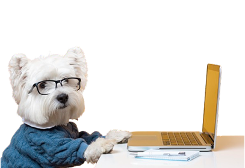
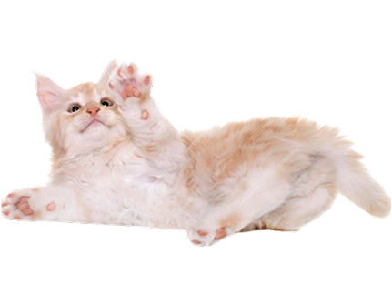
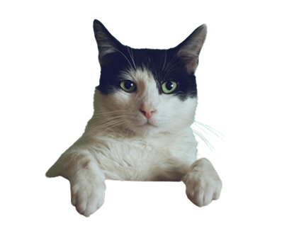

A ACAPRA é uma organização sem fins lucrativos da cidade de Brusque que atua na defesa, proteção e bem-estar dos animais. Nosso objetivo é promover o respeito à vida animal por meio de resgates, cuidados, adoção responsável e conscientização da população. Buscamos construir um futuro melhor para os animais abandonados, sendo um canal de amor, empatia e transformação social.
Sonhamos com uma sociedade mais justa, empática e consciente, onde todos os animais sejam respeitados e tratados com dignidade. Queremos ser referência em proteção animal na cidade de Brusque, inspirando pessoas e instituições a também fazerem parte dessa mudança. Acreditamos que, com pequenas atitudes e o engajamento da comunidade, podemos transformar o mundo ao nosso redor e construir um futuro melhor para todas as espécies.
Nossa missão é defender os direitos dos animais, promovendo o seu bem-estar físico e emocional. Atuamos de forma ativa no resgate, reabilitação e encaminhamento para adoção responsável, além de desenvolver ações educativas que despertem a empatia nas pessoas. Trabalhamos todos os dias para ser a voz daqueles que não podem falar, lutando por um mundo mais humano, justo e solidário para todos os seres vivos.
Excelência – Amor – Empatia – Ética – Respeito – Equipe